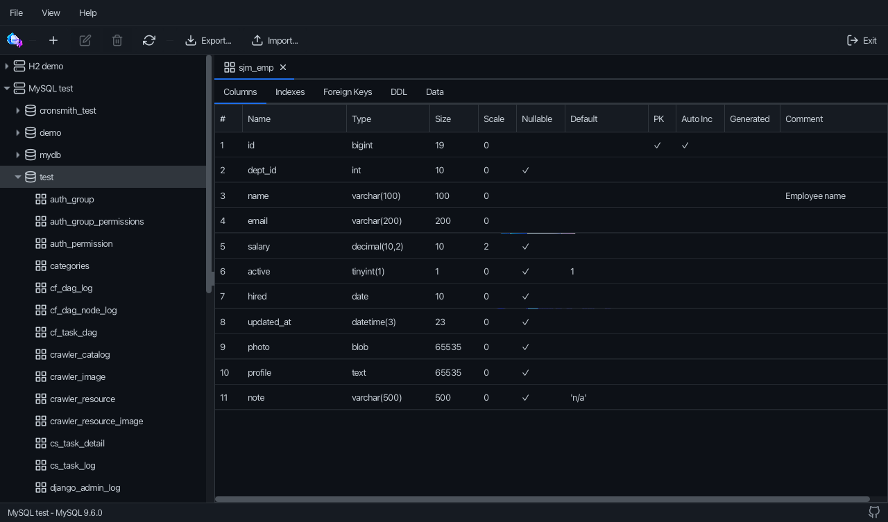
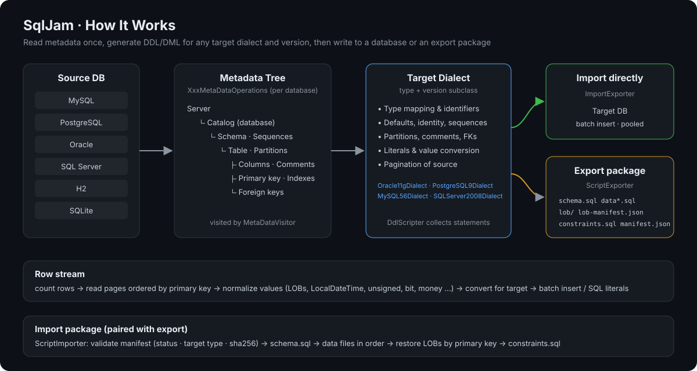
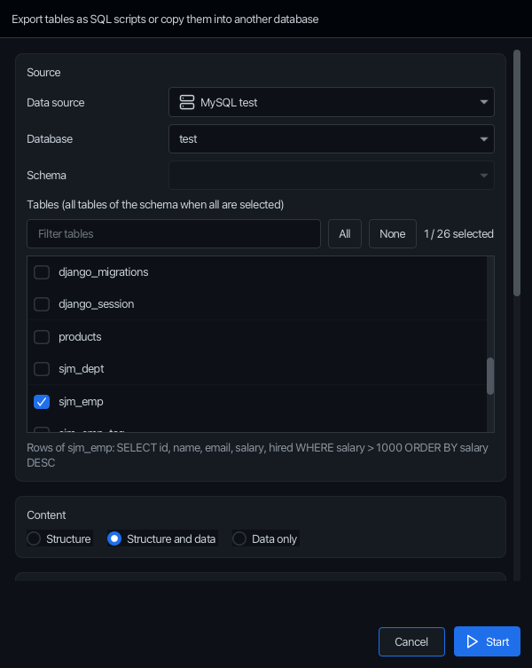
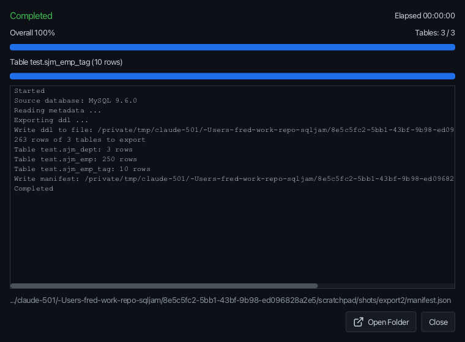
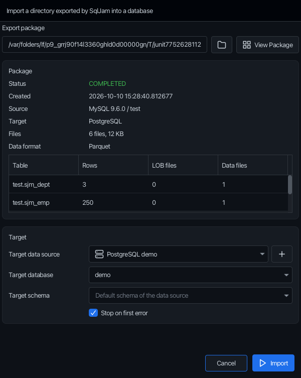
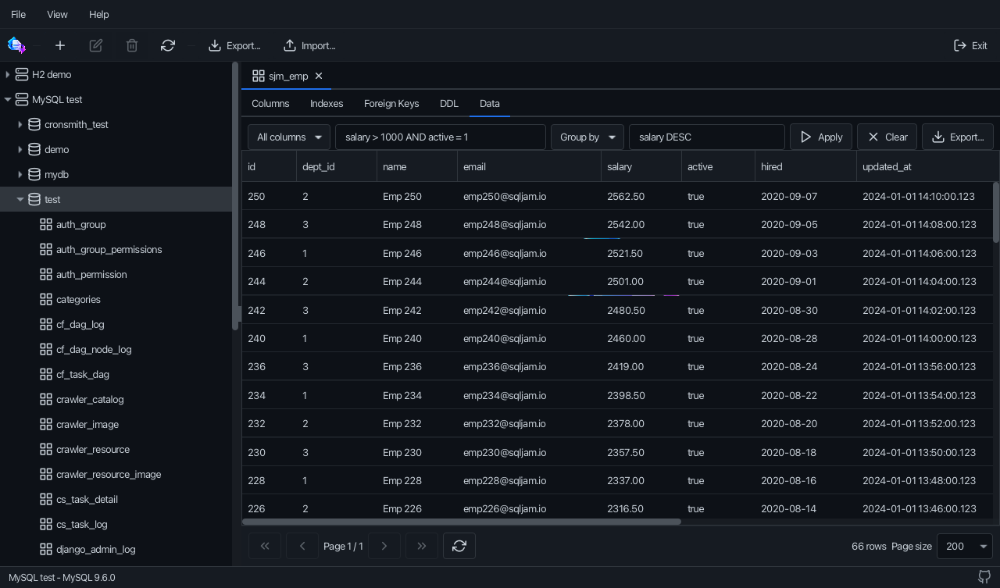
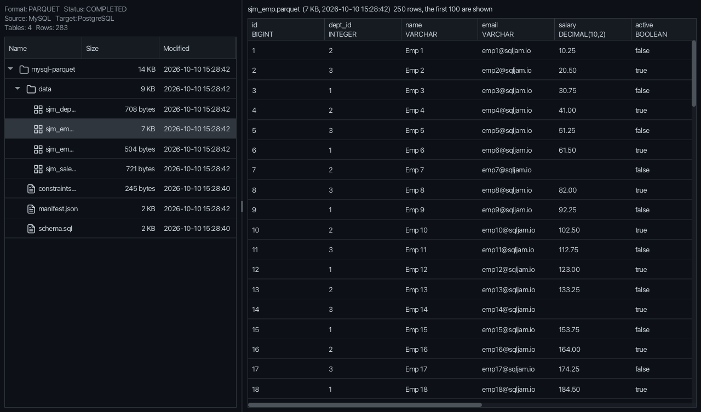
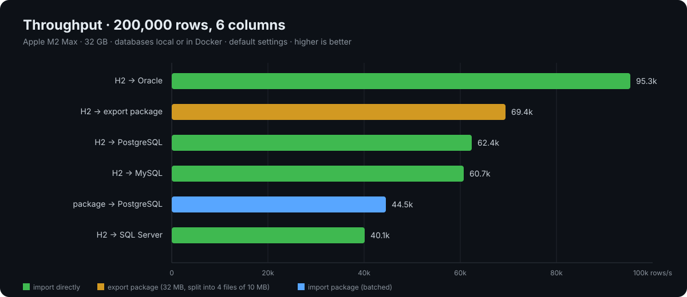

Move tables across databases. Schema, data and all.
A desktop import/export tool that copies tables, indexes, constraints, sequences, partitions and rows between relational and OLAP databases, directly, as copies in the same schema, or through a self-describing SQL or Parquet export package you can import later.

INSERT statements are easy. Everything around them is not.
Types, identity columns, default values and literals differ in every database.
→ The target dialect translates them.
Oracle 11g has no identity, SQL Server 2008 no OFFSET, PostgreSQL 9 no partitions.
→ Version subclasses generate compatible SQL.
Data arrives, but primary keys, foreign keys, sequences and comments do not.
→ Table-level objects move together.
Gigabyte data.sql files and BLOB literals that break 4000-byte limits.
→ 10 MB parts and LOB files.
Shifted timestamps, overflowing unsigned numbers, garbled bits and money.
→ A portable value pipeline.
Every source/target combination, verified by tests.
Dialects picked by detected or selected server version.
Primary keys, indexes, foreign keys, comments and sequences.
PostgreSQL, MySQL, Oracle and SQL Server partitioning preserved.
SQL files, LOB files and manifest.json, split at 10 MB.
Status, target type and SHA-256 checked before running.
Overall percentage, per-table progress, error log and cancel.
A modern JavaFX UI with 7 switchable themes.
Columnar export packages and Parquet files of other tools, through an embedded DuckDB.
DuckDB and ClickHouse next to the relational databases.
Columns, WHERE, GROUP BY and ORDER BY in the data viewer, then export just those rows.
Copy tables inside the same schema with names like {table}_copy.
SqlJam builds a metadata tree of the source, renders it with the dialect of the target type and version, then streams rows to a database or an export package.

Metadata: per-database operations read tables, keys, indexes, comments, partitions and sequences.
Dialect: DbType.createDialect(major, minor) picks e.g. Oracle11gDialect.
Rows: counted, paged by primary key, normalized and written in batches, or written to Parquet by an embedded DuckDB.
Java 17 is all you need on Windows, macOS and Linux. JavaFX and every JDBC driver are bundled.
git clone git@github.com:paganini2008/sqljam.git && cd sqljam
./mvnw -DskipTests package # Windows: mvnw.cmd, output goes to bin/
bin/sqljam.sh # Windows: bin\sqljam.bat, or double click the jar of your platform// MySQL database → PostgreSQL export package
ScriptExporter exporter = new ScriptExporter(new File("export"), false);
Exporter.ExportConfiguration config = exporter.getConfiguration();
config.setDbType(DbType.MYSQL);
config.setUrl(DbType.MYSQL.getUrl("localhost", 3306, "shop"));
config.setUsername("root");
config.setPassword("secret");
exporter.setTargetDbType(DbType.POSTGRESQL);
exporter.exportDdlAndData();export/
├── schema.sql
├── data.sql # data_2.sql … above 10 MB
├── lob/
│ └── document/000001_content.clob
├── lob-manifest.json
├── constraints.sql # foreign keys, after data
└── manifest.json # source, target, sha256, rows
Pick tables, choose the target type and version, one file per table or a single data.sql, and whether LOBs go into files.
exporter.setTargetDbType(DbType.ORACLE);
exporter.setTargetVersion(11, 2); // sequences + triggers
Copy straight into another data source, or create one on the spot with the + button next to it. Target schemas are created, identities continue from the imported max value.
target.setDbType(DbType.SQLSERVER);
target.setTargetSchemaName("hr"); // created if missing
importer.exportDdlAndData();
The manifest decides: only data sources of the exported target type are offered, files are checked by SHA-256 and run in order.
ScriptImporter importer = new ScriptImporter(connection, DbType.POSTGRESQL);
importer.importDirectory(new File("export"));
Browse databases, schemas and tables. Narrow the rows with columns, WHERE, GROUP BY and ORDER BY, then export just those rows. A missing target table is created with the selected columns.
source.getTableQueries().put("EMPLOYEES", new TableQuery(columns,
"SALARY > 1000", null, "SALARY DESC"));
target.setTableNamePattern("{table}_copy"); // copies in the same schema
Export packages of Parquet files, look inside them with sizes, times and previews, and load Parquet files of other tools into any table.
parquet.setCompression("ZSTD");
parquet.exportDdlAndData(); // data/<table>.parquet
importer.importFiles(files, "sales", ParquetImporter.Mode.CREATE);
| Scenario (200,000 rows × 6 columns) | Time | Rows/s |
|---|---|---|
| H2 → Oracle 23ai | 2.1 s | 95.3k |
| H2 → export package (32 MB, 4 files) | 2.9 s | 69.4k |
| H2 → PostgreSQL 16 | 3.2 s | 62.4k |
| H2 → MySQL 9.6 | 3.3 s | 60.7k |
| H2 → SQL Server 2022 | 5.0 s | 40.1k |
| Export package → PostgreSQL | 4.5 s | 44.5k |
Environment: Apple M2 Max, 32 GB, JDK 17 · MySQL and PostgreSQL local, Oracle and SQL Server in Docker · default settings.
Build, run and export your first tables.
Read →Export packages, direct imports and type translation.
Read →Every key of sqljam.properties and export options.
Read →Exporter, ScriptExporter, ImportExporter, ScriptImporter, ParquetExporter, ParquetImporter.
Browse →Metadata tree, dialects and version subclasses.
Read →English, 中文 and a Medium edition.
Read →